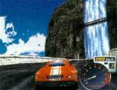

|

Review
Game Type: 3D Racing

The latest in Namco's popular Ridge Racer series, pretty much
the standard in 3D racing games. Select and customize a vehicle, then
take it to the track to win money so you can purchase more cars. (Wow,
this is the life!)
Gameplay: 90/100
If you've played the other two RR games you know exactly what to
expect. There's more emphasis on downshifting this time around, as some
of the hills (mountains, actually) are extremely steep. There's also a
bit more difference between the cars you can purchase. (The cheapest
looks almost like a Volkswagen Beetle.) Unfortunately Namco still
hasn't seen fit to increase the number of available tracks from three,
although mirrored tracks are once again accessible and the main tracks
are quite long. The control is as always excellent and the game is as
always fun. Ideal for those of us looking for a driving game, not a
driving sim.
Graphics: 90/100
As before the game runs in low-res mode and looks a bit pixelized,
but it's not too noticeable, especially at this high framerate. The
tracks are stunning, bedecked with waterfalls, glassy skyscrapers,
tree-lined lanes, bridges, and more. Unfortunately it seems like you're
racing in twilight half the time, so many of these features don't stand
out as often as they should. The ability to draw your own logo for your
car and select the paint job is a nice bonus.
Sound: 70/100
The (non swap-friendly) techno music is of the same dubious quality
as before. The sound effects are good, though; you can hear the plane
passing overhead and the waterfalls as they slide by among others.
Overall: 90/100
Despite a couple new features in the car customization department
Rage Racer gets zero points for originality. It's basically Ridge Racer
all over again with a couple new tracks. It's still a good game, and
if you're looking for your first Playstation racer I recommend it. But
if you own either of the other RR games steer clear.
|